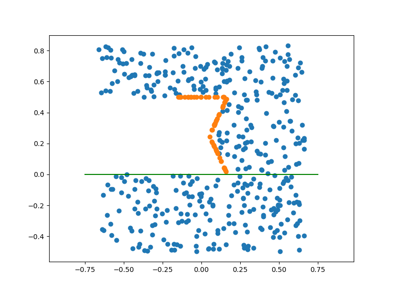
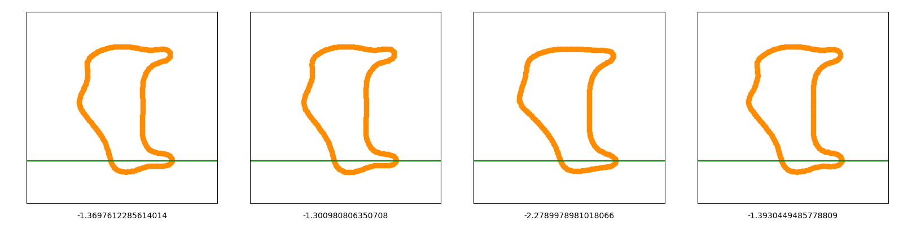
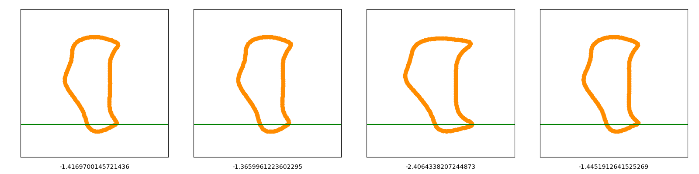
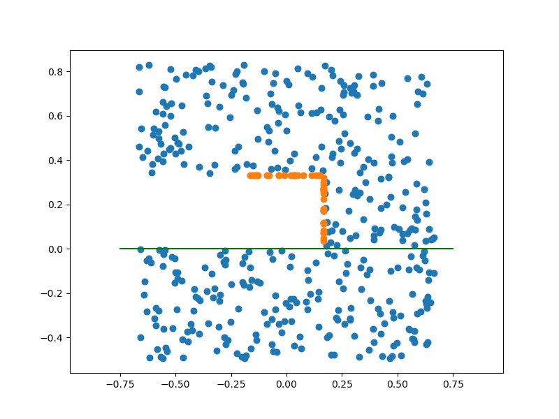
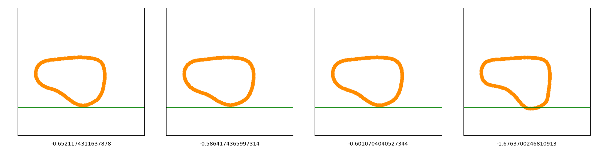
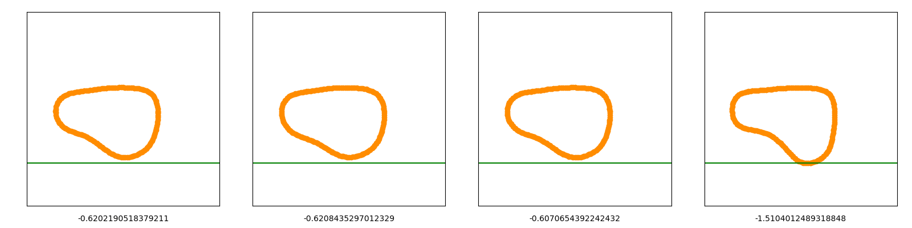
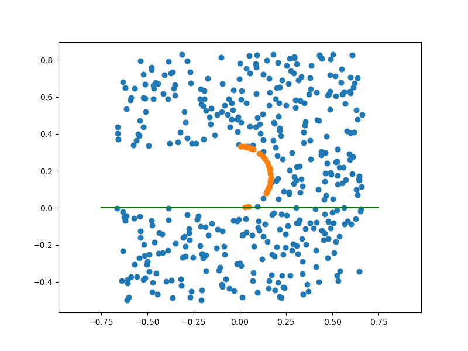
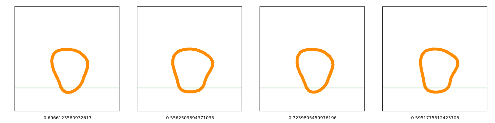
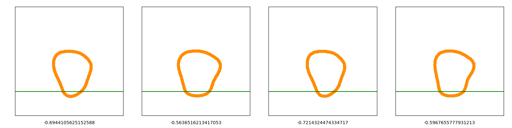
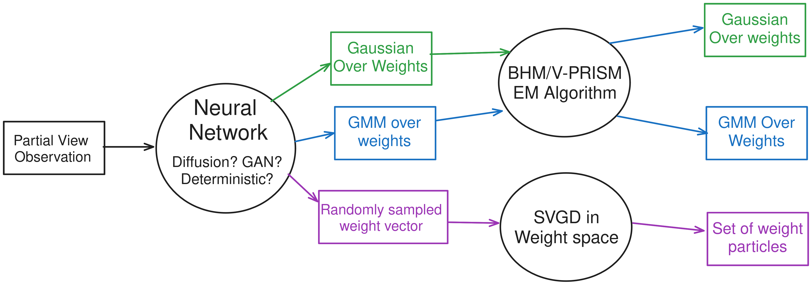

2024 Aug 02
The main action items from last meeting were:
Below, 1 and 3 are covered. The V-PRISM presentation can be found here
Below are examples from the three 2D example datasets from last time. Optimization didn’t really change the ln prob very much, and improvements are minimal.
Hourglass

Before:

After:

Square

Before:

After:

Circle

Before:

After:

My Takeaway: The optimization is not well-behaved and results aren’t good. Perhaps possible solutions discussed in following sections could be used.
In order for the 3D examples to work, I need to extend my code to handle contacts and dynamics in 3D. I have written some code for this, but it isn’t working yet. But I have been learning about stuff like this:
I still need to fix it in order to visualize the 3D examples
Consider we have an ODE dynamic system conditioned on some parameter w: \frac{ds}{dt} = f(s; w) And we define some loss function on a future state of x: L(s_T) = L\left(s_0 + \int_0^T f(s_t; w) dt\right) Then we would like to calculate the gradients of L in a stable way: \nabla_w L.
Neural ODEs [1] are a type of neural network, where the network defines the velocity of some state (ODE) (in above formulation, f is a neural network) and the output is generated by starting at an input and running the ODE forward for a fixed time interval. In the original paper [1] gradients were calculated using the adjoint sensitivity method, which computes gradients by solving a second ODE.
Adjoint Sensitivity Method: The Adjoint of L is defined as a(t) = \partial L / \partial s_t, which is used to write the gradient \nabla_s L as the following: \frac{dL}{dw} = \int_T^0 a(t)^\top \frac{\partial f(s_t; w)}{\partial w} dt Note that the integral operands are switched. In practice, an ODE solve during the backward pass was used to calculate this.
The reasons given for using this method were as opposed to differentiating the integration operations directly were:
Implementation: The code was implemented in the
torchdiffeq package.
pip install torchdiffeqOther Stuff:
“Works that utilize the penalty method approximate contact behavior at each timestep with forces from stiff spring and dampers. While the method can approximate a wide range of contact behavior such as impact, the dynamics often results in a stiff ODE, which requires small timesteps to approximate well” (from [4])
The soft/compliant contact model that I am using (which is similar to [5], [6]) can become a “stiff” ODE with the wrong parameters [4], [7]. A stiff ODE means that integrating “naively” will only be stable for very small time steps. In our case, it is shown that with a damped spring, this is correlated to the actual stiffness of the spring [7]. Such stiffness results in high-variance gradients. Stiffness is clearly a problem if we encounter it, but it seems that if the physics parameters are set correctly, stiffness is less likely to occur.
My Takeaway: We should battle stiffness with hyperparameter tuning with respect to the physics before reaching for adjoint sensitivity method.
Also Interesting: Some non-compliant formulations of differentiable physics make use of the adjoint method (which I think is substantively different from adjoint sensitivity method) for calculating gradients, such as [8]
Why Smooth Contact Dynamics: Differentiable physics formulations (specifically the penalty method I am exploring) can run into various problems/issues when their gradients are used for optimization or other tasks. Here are a few:
Adding smoothing, or stochasticity has been shown to deal with these problems [9], [10]. Contact smoothing, specifically, smooths over contact nodes, which can be interpreted as contacts exhibiting a slight force at distance. In [10], an equivalence is shown between randomized smoothing and analytic smooth surrogates.
How to Smooth Penalty Method: The penalty method that I am using has the following formulation for force: f_n = \begin{cases} -k_e \max(0, d) + k_d \dot d, & d \leq 0 \\ 0, & d > 0 \end{cases} f_t = \frac{v_t}{\|v_t\|} \min(k_t \| v_t \|, \mu \|f_n\|) We can likely smooth just by replacing the \min, \max functions with smooth surrogates. There is still a discontinuity from the k_d \dot d term as pointed out in [11]. This can simply be replaced with a Sigmoid function.
Note: Smoothing will likely not solve everything. We still want to avoid “stiff” formulations [7], and running for long time horizons can also create problems [6]. Hyperparameter tuning will be necessary.
My Takeaway: Contact smoothing could be an avenue worth exploring, but some hyperparameter tuning is required.
I can think of a few ways to implement learned priors into Bayesian Hilbert Maps. Here are some:
Here is a visual about how different flows might go:

Alternatively, we could introduce the neural network by:
There also maybe there are other ways to get priors beyond just predicting into weight space?
link to slides: V-PRISM IROS slides
Question: How was the presentation overall? Was timing OK? What should be added/removed?
Looking forward I want to do the following next week:
Other Questions: